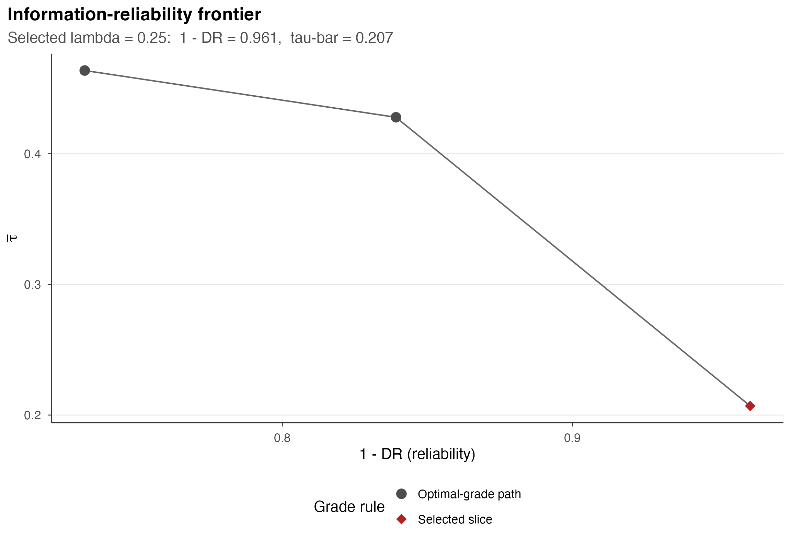
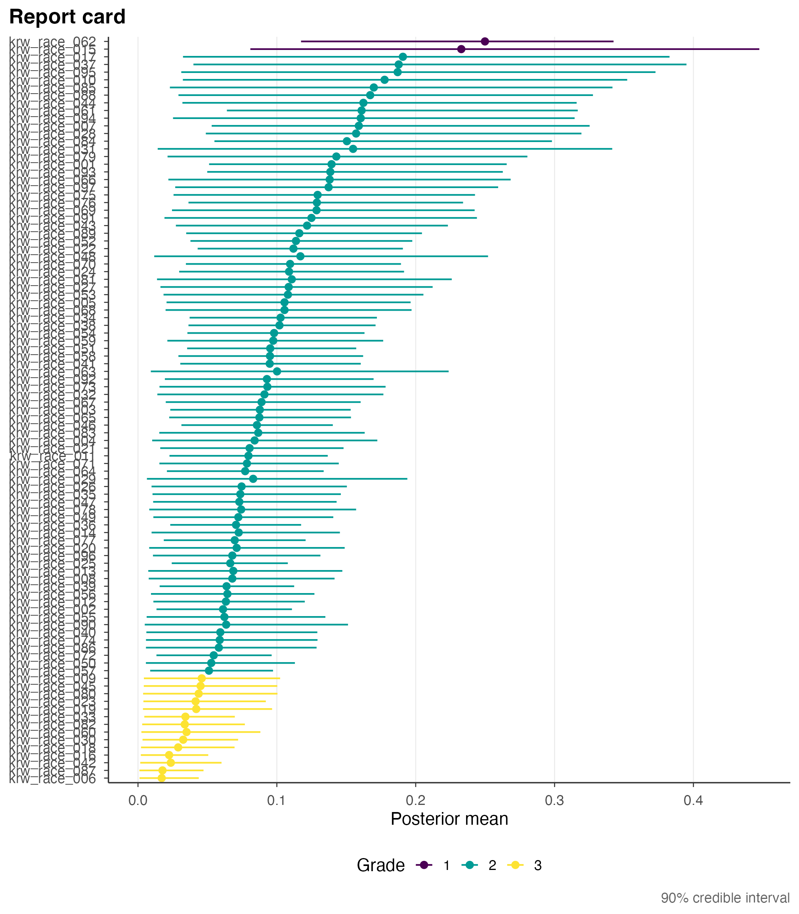

M4: Grading, the frontier, and report cards
JoonHo Lee
2026-06-06
Source:vignettes/m4-grading-frontier-and-report-cards.Rmd
m4-grading-frontier-and-report-cards.RmdAbstract
This vignette is the social-choice climax of the method track: how the pairwise outranking matrix Pi that m3 hands forward becomes grades. gradepath solves a Bayes-risk integer program that sorts the units into a small number of contiguous grades, trading the discordance rate against the posterior Kendall agreement through a single coarseness weight lambda. Sweeping lambda traces the information-reliability frontier: fewer grades are coarser but more reliable, more grades are finer but less reliable, and the published grading sits at the baseline lambda = 0.25. The selected grading is assembled into a report card, ranked from the most-extreme unit, with a conditional-discordance matrix that certifies each between-grade cut. We derive the integer program, the frontier, and the report card, citing KRW Propositions 1-3. The grade solve takes minutes, so it is shown but never run here: every step is verified live against the already-solved 97-firm parity fit.
This is the fourth method-track vignette and the social-choice climax of the pipeline. m3 ended by deriving the one object the grading reads: the pairwise outranking matrix , whose entry is the posterior probability that unit ’s latent effect exceeds unit ’s. This vignette takes and derives the three objects that finish the KRW pipeline: the Bayes-risk grade integer program that sorts the units into contiguous grades (§2-§3), the information-reliability frontier swept over the coarseness weight (§4), and the report card with its conditional-discordance matrix (§5-§6). We summarize the theory from Kline, Rose & Walters (Kline et al. 2024) — stating, not reproving, their Propositions 1-3 (§7) — and follow each step with a verification panel checked live against the fit.
We load that fit once, at the top. The grade integer program
solves: it is a mixed-integer program that takes minutes at
,
so the verbs gp_grade() and gp_grade_path()
appear only as eval = FALSE illustrations. Everything else
is a fast read off the already-solved path stored on
the fit, so no integer program is solved anywhere in this
document.
fit <- gp_parity_fit("race") # the proven 97-firm RACE card, grades 2 / 81 / 14This is the 97-firm RACE parity fit at the KRW baseline , already solved across the grid. Keep one fact from m1 in view: a grade is an integer label in — not a letter grade such as A or B — and exported grade 1 is the most-extreme block in . A grade is a sorting by posterior evidence, never a contest.
1. From the pairwise matrix to grades
m3 handed us , a full table of pairwise outranking probabilities. Why is that not already the answer? Because orders every pair but not the whole. The naive rule — separate above whenever clears a threshold — can disagree with itself: the evidence might decisively order above yet be too weak to order either against a middle unit , leaving the pairwise rule to tie with and with while demanding above . That is a cycle, the report-card analog of a Condorcet cycle in voting, and a grading cannot contain one.
So the goal is precise: partition the units into a small number of contiguous, ordered grades so that the ordering respects the posterior where the evidence is strong, pools units the data cannot separate, and is cycle-free. Because the conflicts must be resolved globally rather than pair by pair, this is an optimization, not a thresholding pass. gradepath follows KRW (Kline et al. 2024) in casting it as a Bayes-risk integer program — the modern compound-decision view of ranking and selection (Gu and Koenker 2023; Mogstad et al. 2024). The arc below states the program (§2), extracts the grade from its solution (§3), sweeps for the frontier (§4), assembles the report card (§5), decomposes its reliability boundary by boundary (§6), and places the result against KRW’s optimality propositions (§7).
2. The Bayes-risk integer program
The grading is encoded by binary pairwise indicators. For each ordered pair with , the variable is set to exactly when the grading ranks above (so carries the more-extreme grade). Crucially, and are independent solver variables — the program does not hard-impose ; antisymmetry and transitivity enter as linear constraints, which is exactly what lets two units tie when the evidence is weak.
The objective. The solver minimizes a Bayes risk that is linear in the . For each ordered pair the per-pair contribution of separating above is
summed over the ordered pairs the grading separates, where is the pairwise matrix from m3. Read the two terms as a ledger. The first, , is the discordance cost: the posterior mass saying is the more-extreme unit, charged against a grading that put above it. The second, , is the information reward, scaled by : the agreeing mass, credited for a separation the evidence supports. The optimizer is paid to order a pair the way the posterior does and penalized for the reverse; is the exchange rate between the two.
The constraints. Two families pin down the feasible set. Antisymmetry forbids ranking above and above at once; transitivity forbids cycles, so above and above force above . gradepath encodes transitivity through an integer grade-label auxiliary (every unit gets a label, the binaries tied to the label gaps), making cycles infeasible by construction; the backend is the subject of a5. The one constraint a reader should carry is the separation threshold: two units may share a grade only when neither outranks the other decisively, i.e. when
At the baseline the threshold is : the stronger pairwise probability must fall below for two units to pool. Raise and the threshold drops toward (separate on the faintest majority); lower it and the threshold rises toward (pool unless near-certain). This inequality is the gear that turns into a grade count.
The call (shown, not run). The grading is produced
by gp_grade_path(), which solves one integer program per
on the grid and records the reportable
;
gp_grade() is the one-shot for a single
.
Both solve and take minutes, so they are shown here only as
illustrations:
# Solve the full grading frontier from a pairwise object (the main verb).
# This SOLVES one integer program per lambda and takes minutes -- not run here.
path <- gp_grade_path(get_pairwise(fit),
lambda_grid = c(0.25, 0.50, 1.00), # 0.25 must be present
selected_lambda = 0.25) # the reportable weight
# One-shot: solve a single lambda and return its fit.
one <- gp_grade(get_pairwise(fit), lambda = 0.25)We never run these. The path on the bundled fit is already solved,
and the solver returns the optimum exactly — status
"optimal" at a Gurobi MIP gap of
— which we read straight off the fit:
fit$selected_grade$summary$status # "optimal": the IP is solved to optimality
#> [1] "optimal"
fit$selected_grade$summary$grade_count # the selected grading has 3 grades
#> [1] 3
fit$selected_grade$summary$n_units # over all 97 firms
#> [1] 97The selected grading is solved to optimality (status =
“optimal”), with 3 grades over all 97 firms. Because the gap is
,
this is the proven risk-minimizer at
,
not an approximation. (Read the scalar objective from
fit$grade_path$summary$objective, shown in §4 —
not from fit$selected_grade$objective, which is a
structured list rather than a number.) The optimality guarantees are KRW
Propositions 1-3, stated in §7.
3. Extracting the grade
The integer-label auxiliary that enforced transitivity is not the reported grade. The grade is reconstructed from the optimal binaries by a win-count and a dense rank — the grade-direction triple fixed in m1. First, for each unit sum the binaries to get its win-count,
the number of units is placed above (the code uses , not , because the two are independent). Second, the exported grade is the descending dense rank of the win-count,
so the unit with the largest
— placed above the most others, the most-extreme
— earns the smallest label, grade
,
and equal win-counts share a grade. The welfare reading of grade 1
flips between datasets: for firms it is the most-discriminatory
firm, for names the best-treated name (the m1 firms-vs-names invariant).
The machinery is identical; only the interpretation reverses — which is
exactly why gradepath’s output is result-first and quantity-anchored
(the package decision GP-DEC-14-A).
Verification panel. The internal
and
are solver-internal, but the assembled card carries their
consequence: grade 1 sits first, the
largest-
block at the top. as.data.frame(fit) lays the 97 firms out
one per row in rank order:
card <- as.data.frame(fit)
dim(card) # 97 rows x 10 columns: one firm per row
#> [1] 97 10
head(card, 6) # grade 1 first -- the dense-rank extraction
#> id label grade sort_rank selected_lambda posterior_mean
#> 1 krw_race_062 krw_race_062 1 1 0.25 0.2498718
#> 2 krw_race_015 krw_race_015 1 2 0.25 0.2328297
#> 3 krw_race_017 krw_race_017 2 3 0.25 0.1907685
#> 4 krw_race_037 krw_race_037 2 4 0.25 0.1877637
#> 5 krw_race_095 krw_race_095 2 5 0.25 0.1870007
#> 6 krw_race_010 krw_race_010 2 6 0.25 0.1775977
#> lower upper estimate se
#> 1 0.11742058 0.3424767 0.3303573 0.0713513
#> 2 0.08092269 0.4474549 0.4332195 0.1308592
#> 3 0.03242811 0.3827927 0.3772942 0.2828115
#> 4 0.03993012 0.3950010 0.4022631 0.2158661
#> 5 0.03117536 0.3726872 0.3499199 0.2856306
#> 6 0.03232195 0.3523093 0.3431389 0.2385807The card is 97
10 and its first rows carry grade 1, consistent with the descending
dense-rank extraction placing the
largest-
block first. The directional consequence is also checkable numerically:
if grade 1 is the most-extreme
,
the mean posterior effect must be largest in grade 1
and decrease as the grade number rises. Group the card’s
posterior_mean by grade:
tapply(card$posterior_mean, card$grade, mean) # decreasing across grades 1 -> 3
#> 1 2 3
#> 0.24135079 0.10305885 0.03308774Grade 1 carries the highest mean posterior effect (0.241), falling to 0.103 in grade 2 and 0.033 in grade 3 — monotonically decreasing, the numeric confirmation that the dense-rank-of-win-count extraction places the most-extreme in grade 1.
4. The information-reliability frontier
A single gives a single grading; sweeping over a grid gives a path of gradings, and scoring each against the same traces the information-reliability frontier. Each point is the risk-minimizer at its own , so the whole curve is the menu of defensible gradings. The two coordinates are the reliability on the horizontal axis — the posterior share of between-grade comparisons that agree with the posterior — and the posterior expected Kendall agreement on the vertical — how much rank information the grading carries. By construction,
The trade-off is monotone, and it is the central finding. As rises the optimizer separates more units, so the grade count rises, rises (more information), the discordance rate rises, and reliability falls. Fewer grades are coarser but more reliable; more grades are finer but less reliable. There is no free lunch: every grade you add buys information at the cost of reliability. At the rule collapses to the Condorcet ordering, the finest the rule will return.
Verification panel. The frontier table is
fit$grade_path$summary, one row per
.
For the parity fit it has three rows; read off the monotone
grade-count-up / reliability-down trade-off:
fit$grade_path$summary[, c("lambda", "grade_count", "discordance_rate",
"reliability", "tau_bar")]
#> lambda grade_count discordance_rate reliability tau_bar
#> 1 0.25 3 0.03869221 0.9613078 0.2069798
#> 2 0.50 6 0.16083626 0.8391637 0.4278979
#> 3 1.00 97 0.26815392 0.7318461 0.4636922Three rows tell the whole story. As
rises
,
the grade count climbs 3 -> 6 -> 97, the discordance
rate rises 0.039 -> 0.161 -> 0.268, reliability — its
complement — falls 0.961 -> 0.839 -> 0.732,
and
rises 0.207 -> 0.428 -> 0.464. The endpoint
has shattered into 97 singleton grades — the Condorcet ordering — while
the selected grading sits at the other end,
,
with 3 grades. The objective at the selected
is the optimal Bayes risk in the program’s coordinates:
fit$grade_path$summary$objective[fit$grade_path$summary$lambda == 0.25]
#> [1] -211.6227— about -211.6, the minimized risk of the selected grading (more
negative is better, since the information reward enters with a minus
sign), with every row reported optimal.
Figure. gp_frontier() scores the
already-solved path against
and gp_plot_frontier() draws the
curve (KRW Figure 6b) — a fast read, no solve. The two-row legend sits
at the bottom, so give the figure a wide, short canvas:
fr <- gp_frontier(fit$grade_path, pairwise = get_pairwise(fit))
gp_plot_frontier(fr)
The information-reliability frontier for the RACE fit (KRW Figure 6b): reliability (1 minus the discordance rate, horizontal) against the posterior expected agreement tau-bar (vertical), with the selected lambda = 0.25 grading marked. Walking the curve trades grade count against reliability.
Read the curve from right to left as a walk in . The right-most, most-reliable point is the coarse three-grade baseline; moving left adds grades, buying at the cost of reliability. The highlighted point is the selected grading — a small number of grades capturing most of the achievable while holding the discordance rate near 0.039.
5. The report card
The report card translates the frontier’s abstract trade-off into the policy artifact a regulator reads: a ranked list of units, each with its posterior interval and its selected grade. Its assembly is a join with two keys. The sort key is the Condorcet () order — the finest ranking, the most-extreme unit on top — so the rows read top-to-bottom as most-to-least extreme. The display key is the selected () grade — the small number of statistically defensible bands painted onto that fine ranking. One row order, one grade column, no recomputation.
The assembled object is get_report_card(fit), and its
tidy form is as.data.frame(fit) — the 10-column card seen
in §3, carrying id, label, grade,
sort_rank, selected_lambda,
posterior_mean, the interval
lower/upper, and the raw
estimate/se. For the race fit, grade 1 is the
small most-discriminatory block, grade 3 the largest best-behaved
block.
Figure. gp_plot_report_card() draws the
point-and-interval “caterpillar” (KRW Figure 7), one firm per row, the
most-extreme on top, coloured by grade:

The RACE report card (KRW Figure 7): each of the 97 firms as its posterior White-minus-Black contact-rate gap (point) with its credible interval (horizontal line), one firm per row, ranked with the most-extreme on top and coloured by its integer grade in the 2 / 81 / 14 split.
Read it in three moves: vertical position is rank (top = most extreme), horizontal position is the shrunken posterior gap, and line length is uncertainty. The grade colours change exactly where the intervals stop overlapping — the bands are cut by the evidence, not at arbitrary points. The card is a ranking annotated with the bands the data can defend, never a verdict.
6. Conditional discordance
The headline discordance rate of §4 is an average, and an average can hide one unreliable boundary. The conditional discordance matrix decomposes it grade by grade. For an ordered pair of grades with the more extreme, the cell is the share of the between-block posterior mass that is misranked — the probability that a unit drawn from grade is actually less extreme than one drawn from grade , conditional on the pair straddling that boundary. A small off-diagonal cell certifies that that specific cut is clean, and it reads as posterior odds: a discordance of leaves posterior mass on the correct ordering, i.e. posterior odds that the grade ordering is right.
Figure. gp_plot_discordance() reads the
same fr object and draws the lower-triangular matrix (KRW
Figure 10a) — no solve:

The conditional discordance matrix for the RACE fit (KRW Figure 10a): a lower-triangular heatmap of the between-grade discordance rate for each pair of grades, the more-extreme grade on the columns (grade 1 at the left) and the less-extreme grade on the rows, each cell annotated with its rate. Small off-diagonal values mean clean cuts between grades.
The off-diagonal cells stay small: every between-grade cut in the three-grade baseline is reliable, and no single boundary carries a disproportionate share of the misranking. This is the granular complement to the headline scalar — the aggregate discordance rate of 0.039 is spread evenly across the cuts, not concentrated in one fragile boundary.
7. Propositions 1-3
The Bayes-risk program is not an ad-hoc rule. KRW prove that its optimum inherits the axiomatic structure of well-studied voting rules, with the classical majority threshold sharpened to . We state their Propositions 1-3 and cite the paper (Kline et al. 2024); the proofs are in their Online Appendix B and are not reproduced here. The three are a hierarchical guarantee — a dominant individual, a dominant set, the internal structure of that set:
- Proposition 1 (-Condorcet criterion). If a unit satisfies for every other , then receives a strictly more-extreme grade than every other unit — equivalently the largest win-count , exported grade 1. At the threshold is the classical Condorcet value ; at the baseline it is . A second-place analogue holds in turn: if a further unit satisfies for every remaining , then receives a more-extreme grade than , which in turn receives a more-extreme grade than all the remaining units — the criterion extends to the runner-up.
- Proposition 2 (-Smith criterion). If a set satisfies for all and , then every unit receiving the most-extreme grade lies in . The grading respects dominant coalitions, not just dominant individuals.
- Proposition 3 (unordered -Smith candidates). Under Proposition 2, if additionally for all , then every unit in receives the same grade: the set collectively separates from outsiders, but the within- evidence is too weak to separate its members.
Together these say the
-optimal
grading treats ties as a first-class feature rather than an
edge case — exactly the honesty the report card needs, and the guarantee
behind the optimal status verified in §2. The modern
reading of ranking-and-selection as a compound decision (Gu and Koenker 2023; Mogstad et al. 2024)
places these results in the same lineage as the empirical-Bayes
shrinkage of m3.
8. Where to next
With the integer program derived, the grade extracted, the frontier swept, and the report card and its discordance matrix assembled and verified live on the fit, the KRW pipeline is complete — the pairwise matrix of m3 has become a small number of honest grades. The next steps:
- Foundations and notation — m1 fixes the grade-direction triple (, dense rank descending, grade 1 = most-extreme ) and the threshold this vignette builds on.
- Precision and standardization — m2 derives the r-scale and the -GMM step upstream of the pairwise matrix.
- Deconvolution and posterior — m3 builds the prior, the posteriors, and the pairwise matrix that this vignette’s integer program consumes.
- Two-level and calibration — m5 extends the grading to the two-level industry model and validates the pipeline by Monte Carlo.
For the workflow side, a1 is
the first contact, a2 runs
the full grading stage hands-on with race and gender side by side, a3 covers the
report-card and frontier accessors used above, a4 is the figure gallery the three plots come
from, and a5 covers the
solver backends that run the integer program this vignette only shows.
Throughout, the grade is a sorting by posterior evidence, never a
contest: gradepath’s printed output is result-first and
quantity-anchored (the package decision GP-DEC-14-A), so
the same code path serves firms and names without the printed text
inverting on one of them.
Provenance
sessionInfo()
#> R version 4.6.0 (2026-04-24)
#> Platform: aarch64-apple-darwin23
#> Running under: macOS Tahoe 26.2
#>
#> Matrix products: default
#> BLAS: /Library/Frameworks/R.framework/Versions/4.6/Resources/lib/libRblas.0.dylib
#> LAPACK: /Library/Frameworks/R.framework/Versions/4.6/Resources/lib/libRlapack.dylib; LAPACK version 3.12.1
#>
#> locale:
#> [1] en_US/en_US/en_US/C/en_US/en_US
#>
#> time zone: America/Chicago
#> tzcode source: internal
#>
#> attached base packages:
#> [1] stats graphics grDevices utils datasets methods base
#>
#> other attached packages:
#> [1] ggplot2_4.0.3 gradepath_0.5.0
#>
#> loaded via a namespace (and not attached):
#> [1] Matrix_1.7-5 ebrecipe_0.5.0 gtable_0.3.6 jsonlite_2.0.0
#> [5] dplyr_1.2.1 compiler_4.6.0 tidyselect_1.2.1 slam_0.1-55
#> [9] dichromat_2.0-0.1 jquerylib_0.1.4 splines_4.6.0 systemfonts_1.3.2
#> [13] scales_1.4.0 textshaping_1.0.5 yaml_2.3.12 fastmap_1.2.0
#> [17] lattice_0.22-9 R6_2.6.1 labeling_0.4.3 generics_0.1.4
#> [21] knitr_1.51 htmlwidgets_1.6.4 gurobi_13.0-1 tibble_3.3.1
#> [25] desc_1.4.3 bslib_0.11.0 pillar_1.11.1 RColorBrewer_1.1-3
#> [29] rlang_1.2.0 cachem_1.1.0 xfun_0.57 fs_2.1.0
#> [33] sass_0.4.10 S7_0.2.2 otel_0.2.0 cli_3.6.6
#> [37] withr_3.0.2 pkgdown_2.2.0 magrittr_2.0.5 digest_0.6.39
#> [41] grid_4.6.0 lifecycle_1.0.5 vctrs_0.7.3 evaluate_1.0.5
#> [45] glue_1.8.1 farver_2.1.2 ragg_1.5.2 rmarkdown_2.31
#> [49] tools_4.6.0 pkgconfig_2.0.3 htmltools_0.5.9